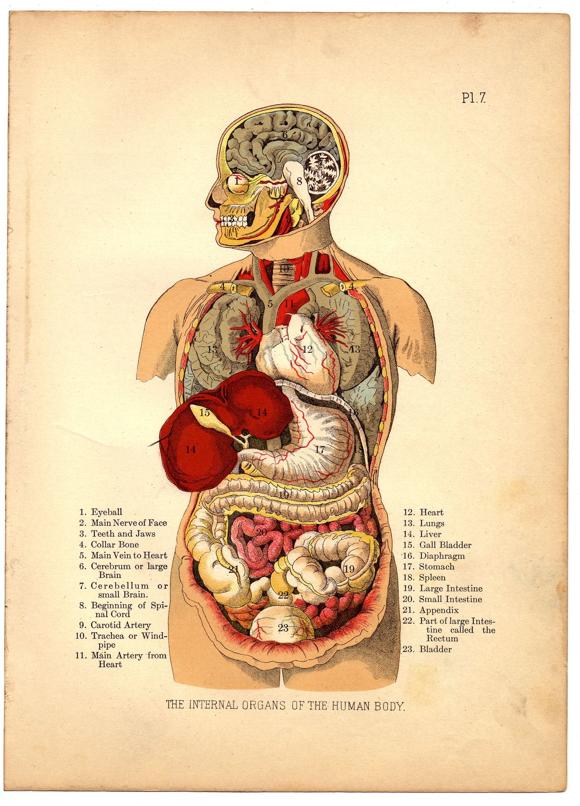

טאבים קבועים
Static Tabs
סרגל המערכות נשאר למעלה בזמן גלילה.
The system bar stays at the top while scrolling.
סרגל הטאבים העליון מאפשר לעבור בין מערכות הגוף, כך שהמבקר רואה בכל פעם רק את האיברים הרלוונטיים.
The top tab bar lets visitors switch between body systems, so only the relevant organs appear at each moment.

בחר מערכת גוף בסרגל העליון כדי לצמצם עומס ולראות רק את הסימונים המתאימים.
Choose a body system in the top bar to reduce clutter and show only matching markers.
סרגל המערכות נשאר למעלה בזמן גלילה.
The system bar stays at the top while scrolling.
כל מערכת מציגה רק את האיברים שלה.
Each system displays only its own organs.
הטאבים וההסברים עובדים בעברית ובאנגלית.
Tabs and explanations work in Hebrew and English.